Results
Click and jump to:
Material & Lighting Ground Truth Comparisons Relighting & Insertion Moving Light SourceMaterial and Lighting Qualitative Comparisons ↑
We use
FIPT(HDR) as reference, which takes in HDR images as input.
Baseline FIPT*(LDR) takes LDR images and estimated emission masks as input.
The roughness σ and metallic m are visualized with OPENCV MAGMA colormap (from left to right: 0~1):
For the HDR emission Le , we mask the non-emitter region in blue, and show tonemapped emission otherwise, such that it is not saturated and difference is visible.
Real (FIPT)
Real (ScanNet++)
Methods (LDR input)
Methods (HDR input)
Results
Material and Lighting Comparisons with Ground Truth ↑
In addition to FIPT(HDR) and FIPT*(LDR),
we also compare the material & lighting estimation with NeILF,
I2-SDF,
and Li et al. 2022.
We thank the authors of I2-SDF and
and Li et al. 2022 for providing the results.
The roughness σ is visualized with OPENCV MAGMA colormap (from left to right: 0~1):
For the HDR emission Le , we mask the non-emitter region in blue, and show tonemapped emission otherwise, such that it is not saturated and difference is visible.
Synthetic (FIPT)
 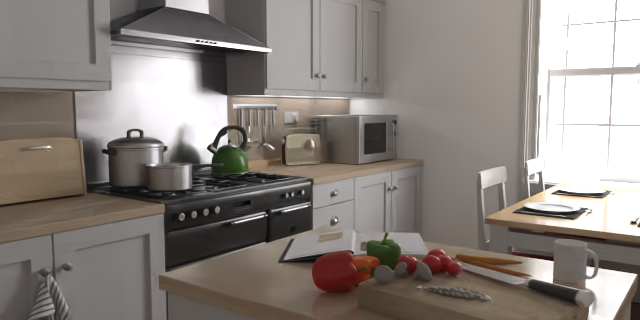
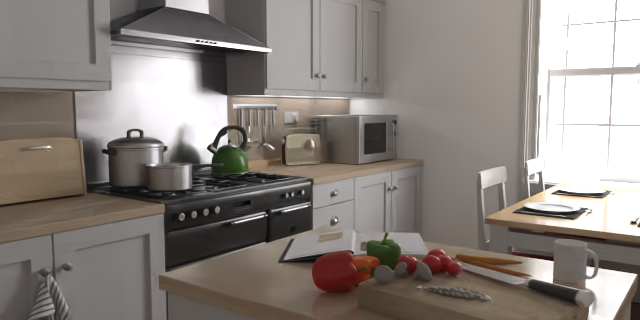


 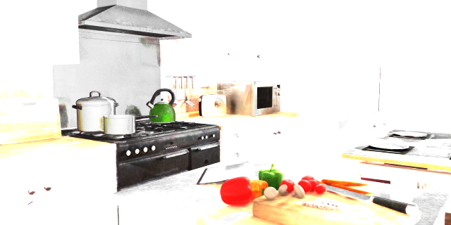
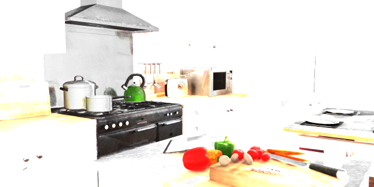

 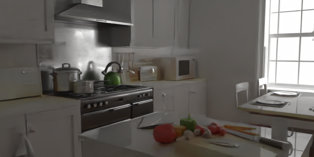
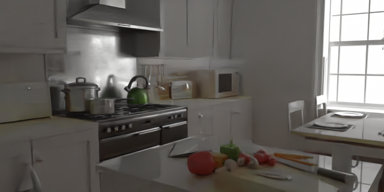

 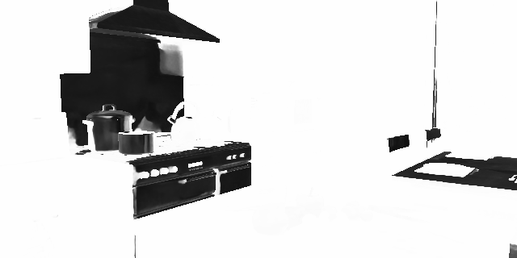
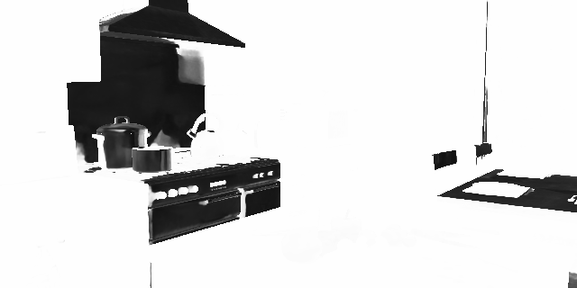


 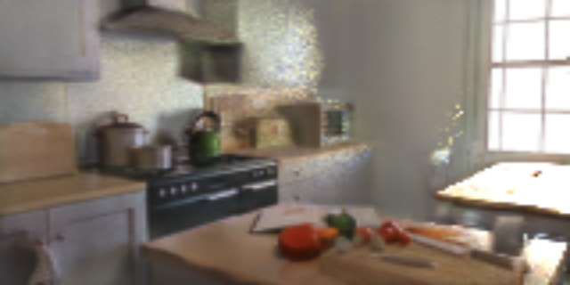
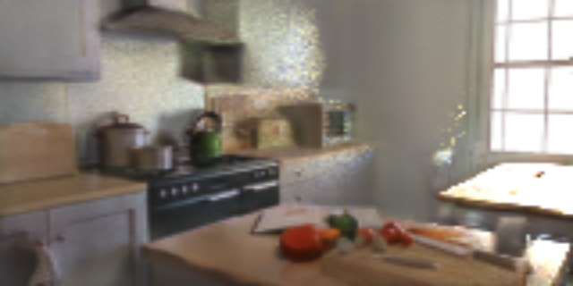
 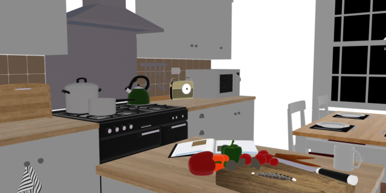
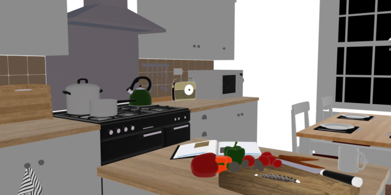

 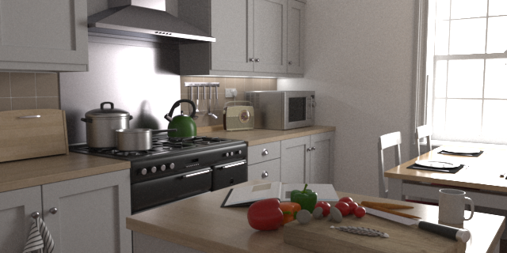
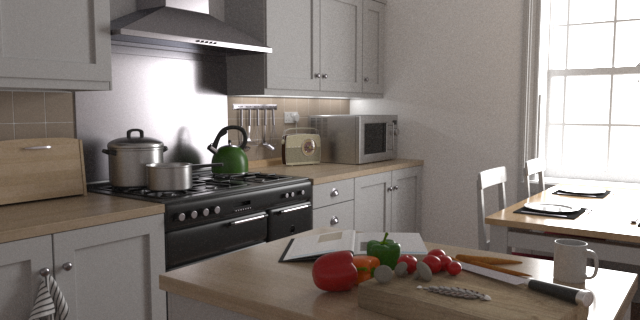
Relighting and Object Insertion Comparisons ↑
We use
FIPT(HDR) as reference, which takes in HDR images as input.
Baseline FIPT*(LDR) takes LDR images and estimated emission masks as input.
Real (FIPT)
Real (ScanNet++)
Methods (LDR input)
Methods (HDR input)
Applications
Comparisons with Moving Light Source ↑
We use
FIPT(HDR) as reference, which takes in HDR images as input.
Baseline FIPT*(LDR) takes LDR images and estimated emission masks as input.
Synthetic (FIPT)
Real (FIPT)
Methods (LDR input)
Methods (HDR input)
Results